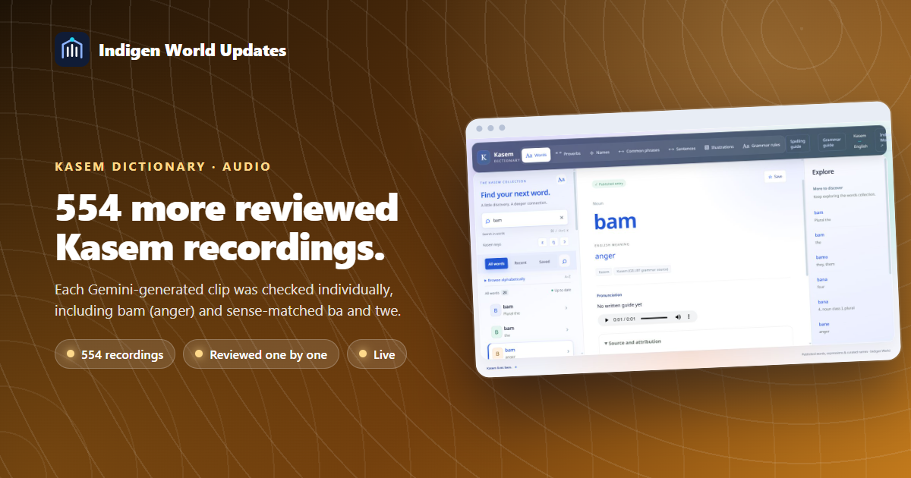
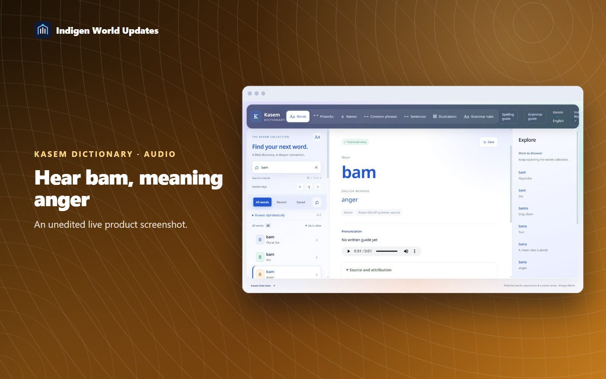

You can now listen to 554 more reviewed Kasem word recordings in the dictionary. Each recording was generated with Google Gemini and checked individually through the dictionary owner’s listening review.

The review adds audio to 553 existing entries and creates one new bam entry meaning “anger.” The owner’s notes also match ba to “come” and place the two reviewed twe recordings under “bees” and “to insult.” The original grammatical meanings are kept separate.
Open the Kasem Dictionary, search in Kasem or English, check the meaning and variety label, then press play. Search for “bam” and select “anger” to hear the new entry.
This update publishes approved recordings only. Another 812 candidate clips remain unpublished because they need a new recording, are uncertain or have not been rated. Some approved sounds belong to a different meaning from the one shown in the review, so their original meanings still need audio. Across this word round, 813 original entries remain without approved audio.
The audio is labelled as AI-generated and approved through the owner’s review. Existing text sources remain credited separately; the new anger meaning comes from the review note. These reviews do not certify every dialect or use of a word. Sentence and greeting recordings are planned for the next round.
The dictionary data and recordings are live on the existing website. No new website deployment or app download is required to use them there. The article itself remains a draft until Chinedum publishes it.